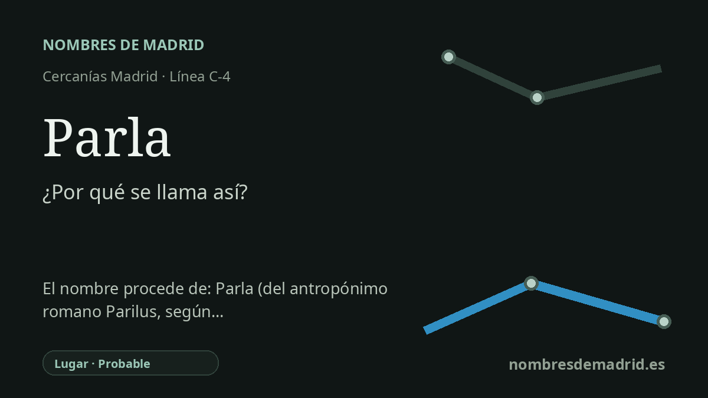

Publicado el · Investigación de Nombres de Madrid · Cómo verificamos cada origen · 7 fuentes consultadas
Respuesta rápida
La estación de Parla recibe el nombre del municipio madrileño al que sirve. La explicación académica mejor respaldada deriva el topónimo de un nombre personal romano, Parilus, con el sentido de una finca o villa perteneciente a ese propietario.
La historia del nombre
La estación de Parla recibe su nombre directamente del municipio de Parla. La parada actual de Cercanías está situada en la ciudad y actúa como cabecera meridional de los servicios C-4 de Madrid, de modo que su nombre ferroviario es geográfico y no conmemorativo: identifica el lugar al que sirve la estación.
Detrás de ese nombre aparentemente sencillo hay un topónimo discutido. La explicación académica más sintética es la formulada por Jairo J. García Sánchez en el Centro Virtual Cervantes: Parla se considera formado a partir del antropónimo romano Parilus, mediante el latín (villa) Parila, es decir, la finca o villa vinculada a ese propietario. El Breve diccionario de topónimos españoles de Emilio Nieto Ballester aparece citado en trabajos académicos posteriores con la misma clase de explicación, tratando Parla como posible nombre de villa o hacienda.
Existe, sin embargo, otra tradición seria en la historiografía local. Una publicación de la Comunidad de Madrid, siguiendo a Fernando Jiménez de Gregorio, explica Parla desde el latín padule y palus, paludis, con el significado de laguna, pantano o estanque. Ese razonamiento se apoya en el paisaje antiguo: el texto menciona antiguas lagunas, terrenos húmedos e hidrónimos o nombres relacionados con el agua como Las Tablas, Los Barriales, Humanejos y Guatén. Esta explicación no invalida la teoría de Parilus, pero muestra por qué el topónimo no ha tenido una sola lectura en la bibliografía local.
La historia del transporte añade otro nivel. La información de Renfe sobre la estación indica que la línea C-4 hacia Parla se inauguró en 1989 sobre parte de la antigua línea Madrid-Ciudad Real, y que la estación actual se inauguró en 1995, pasando a ser cabecera de línea. La presencia ferroviaria anterior se remonta a la línea Madrid-Ciudad Real del siglo XIX, cuya parada de Parla estaba fuera del núcleo urbano; tras construirse la estación moderna, las instalaciones antiguas aparecen en historias ferroviarias con el nombre de Parla-Industrial.
La explicación legendaria, según la cual una persona muda bebe de una fuente y empieza a parlar, pertenece al folclore y no a la etimología. Es culturalmente relevante porque vincula el nombre de la ciudad con una tradición local de fuente milagrosa, pero lingüísticamente es una etimología popular creada a partir del verbo español moderno parlar. La interpretación mejor respaldada es que la estación se llama con seguridad por el municipio, cuyo nombre procede probablemente del nombre romano de finca (villa) Parila, dejando constancia de la alternativa documentada relacionada con lagunas o pantanos.